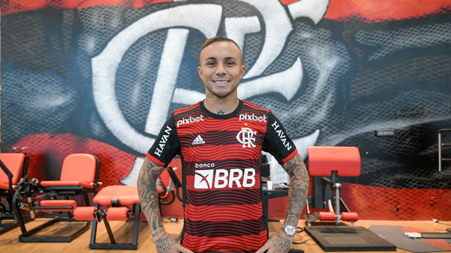

Flamengo contrata Everton Cebolinha em momento crucial na temporada
terça-feira 05/07/2022
O Flamengo está cada vez mais próximo de contratar o ponta-esquerda Everton Cebolinha, que atualmente está no Benfica (POR). Caso a negociação seja sacramentada, o atacante chega ao Rubro-Negro em um momento crucial para a sequência de trabalho do técnico Dorival Júnior. Isso porque, Bruno Henrique sofreu uma lesão multiligamentar no joelho direito na última quarta-feira (15), contra o Cuiabá, no Maracanã. No momento, o Departamento Médico do Flamengo avalia a situação do jogador para decidir o melhor tratamento para o atacante.Caso decida por uma recuperação conservadora, ou seja, sem cirurgia, o camisa 27 voltará a campo em até quatro meses. No entanto, se os especialistas acharem melhor realizar uma operação, a estimativa de retorno aos gramados fica entre oito a dez meses. Desta forma, a contratação de Everton Cebolinha se torna fundamental para o Flamengo, visto que o ponta-esquerda chegaria à Gávea para substituir o camisa 27. O Rubro-Negro pagará 13,5 milhões de euros fixos (cerca de R$ 71 milhões na cotação atual), com bônus por metas atingidas que podem fazer este montante chegar a 16 milhões de euros (R$ 84,1 milhões)Com a ausência de Bruno Henrique e à espera de Everton Cebolinha, o técnico Dorival Júnior foca suas atenções para o confronto deste domingo (19), contra o Atlético-MG, a partir das 16h (horário de Brasília), no Mineirão. A partida é válida pela 13ª rodada do Campeonato Brasileiro.
A sua inconsistência ao longo do último ano foi motivo de discussões entre os torcedores do Benfica. Enquanto uma parcela acredita que ele deveria ter tido mais tempo para se firmar na equipe, outra entende que ele não fará falta ao elenco. “Acreditam no Papai Noel e esperam magias”, disse um aficionado revoltado. O fato é que, no Flamengo, se espera uma versão do jogador mais decisiva como foi no Grêmio campeão da Libertadores em 2017. Cebolinha fez 47 gols em 180 jogos e, além da conquista continental, ganhou a Copa do Brasil de 2016 e a Recopa de 2018. O atacante também tem uma Copa América com a seleção. A transferência do atacante para o Flamengo é uma necessidade debatida abertamente por Dorival Júnior desde que foi anunciado há cerca de uma semana. Por conta disso, o Rubro-Negro não poupou esforços e aceitou comprá-lo pelo valor de 13 milhões de euros (R$ 68,6 milhões). Cebolinha terá no gigante carioca o desafio de dar mais velocidade ao ataque que não vive grande fase em 2022. Na última temporada, ele participou de 46 partidas, fez sete gols e distribuiu sete assistências. Na Champions, foi titular em sete duelos, incluindo contra o Liverpool nas quartas, mas terminou a competição em branco.contratação de ArturoVidal
quarta-feira 06/07/2022
O flerte antigo vai virar relação séria entre Arturo Vidal e o Flamengo. O clube carioca acertou a contratação do meia chileno, de 35 anos. A informação foi divulgada pelo jornalista Benjamin Back. Vidal fez alguns acenos para o Flamengo, como vestir o manto rubro-negro e postar fotos, além de falar publicamente sobre o desejo de defender o clube carioca. De saída da Inter de Milão, ele pode desembarcar no Rio de Janeiro já na próxima semana. O meia chileno vai assinar contrato com o Flamengo até o fim de 2023. Vidal vem para ocupar uma posição carente no clube carioca, de jogador com pegada e presença ofensiva. Após se despedir de Andreas Pereira, cujo contrato de empréstimo terminou no dia 30, o Flamengo age rapidamente e acerta com um reforço de peso internacional. Revelado pelo Colo-Colo, do Chile, Vidal foi para a Europa na temporada 2007/2008, defender o Bayer Leverkusen, da Alemanha. Em 2011, o chileno foi para a Juventus, da Itália. O volante também defendeu o Bayern de Munique e o Barcelona, até ir para a Inter de Milão, em 2020. Com acordo para defender o Flamengo até dezembro de 2023, Arturo Vidal desembarcará no Rio de Janeiro na tarde desta quarta-feira, no Aeroporto do Galeão, e marcará presença no Maracanã, onde o Rubro-Negro enfrenta o Tolima, pela Libertadores, a partir das 21h30. O jogador realizará exames e assinará contrato com o clube nos próximos dias. O anúncio oficial do Flamengo, porém, só deve acontecer no dia 16. Antes, Vidal retornará à Itália para resolver pendências e questões pessoais. A viagem para o país onde atuou nas últimas duas temporadas, pela Inter de Milão, deve ocorrer no fim de semana Confirmado como reforço e inscrito na CBF, Vidal poderá atuar pelo Flamengo a partir de 18 de julho, data da abertura da janela de transferências. De férias, o atleta tem mantido uma rotina de treinos no Chile, e a questão física não deve ser problema para o camisa 22.
Flamengo desiste da contratação de LuisHenrique
quarta-feira 06/07/2022

O Flamengo estava próximo de confirmar mais um reforço para a temporada. No entanto, a negociação com o atacante Luís Henrique desandou nas últimas horas. Segundo a imprensa carioca, os rubro-negros desistiram de buscar o ex-jogador do Botafogo. O Flamengo buscava mais um atleta que atuasse pela ponta para fortalecer o elenco para a sequência da temporada. O pai de Luís Henrique chegou a afirmar que estava tudo certo entre jogador e Flamengo. Ao que parece, o Olympique de Marselha espera vender o atacante nesta janela de transferências. A chegada da SAF definitivamente fez o Botafogo subir de nível no cenário nacional. A disputa pelo atacante Luís Henrique colocou a prova o atual momento alvinegro. Tanto Botafogo quanto Flamengo negociaram com Luís Henrique, que pertence ao Olympique de Marselha-FRA. Ao que parece, os alvinegros vão levar a melhor. Segundo a imprensa carioca, os rubro-negros estavam mais próximos do acerto, mas o Botafogo deu uma cartada que virou o jogo. A diretoria alvinegra propôs a obrigatoriedade de compra após o empréstimo, algo que o rival não cogitava. A proposta agradou ao Olympique, que pode reaver os oito milhões de euros investidos junto ao próprio Botafogo. Agora, resta aos alvinegros entrarem em acordo com o staff de Luís Henrique para concretizar a negociação. Enquanto o Flamengo desiste da contratação de Luis Henrique, o Botafogo, que já negociava com o jogador, volta a ser opção. De acordo com o UOL Esporte, o time de General Severiano não desistiu da contratação e consolidou o contato com o clube francês durante as conversas para repatriar a cria. Segundo a publicação, o Botafogo teve estratégia diferente do Flamengo tratou a negociação direto com o Olympique antes de falar com o jogador e seu estafe. O pai de Luis Henrique, Ronaldo, afirmou que a negociação com o Flamengo estava bem perto de se concretizar. A expectativa era que a chegada ao rubro-negro pudesse abrir portas para grandes na Europa e seleção. Está bem perto de fechar, só esperar a negociação entre Olympique e Flamengo. Entre o jogador e o Flamengo está tudo fechado. A gente fez uma pedida, o Flamengo aceitou. No Flamengo, se o Luis estourar, ele para no Barcelona, no Real Madrid, na Seleção Brasileira. O Flamengo no Brasil é muito maior que o Olympique, que o Torino [da Itália]. É porque esses times estão na Europa, mas aqui o Flamengo não tem igual — disse.
flamengo tenta contratação de wendell ou wallace para o meio campo
quarta-feira 06/07/2022

Após acertar com Vidal, o Flamengo tenta mais um volante para completar seu elenco. A primeira escolha foi Wendel, do Zenit, mas o clube já analisa também como alternativa Walace, da Udinese, revelado pelo Grêmio. A diretoria rubro-negra sabe da dificuldade para tirar Wendel do Zenit porque ele foi um jogador comprado por 20 milhões de euros junto ao Sporting. O atleta foi revelado pelo Fluminense, de onde saiu para Portugal. Mas o jogador demonstrou vontade de vir para o rubro-negro A intenção é conseguir a liberação por meio da suspensão do contrato por um ano, mecanismo criado pela Fifa para jogadores que atuam na Rússia e na Ucrânia. Até porque o Zenit não sinalizou sua liberação. Em paralelo, o Flamengo já sonda a situação de Walace na Udinese. Quer saber se o jogador tem vontade de voltar ao Brasil e quais seriam as condições para um empréstimo. Walace é um desejo antigo do clube rubro-negro, que já sondou sua situação anterior. Esses são os dois alvos para reforçar a posição de volante. Andreas saiu e será substituído por Vidal. Mas há a possibilidade também de Willian Arão deixar o clube. O clube ainda conta com João Gomes e Thiago Maia para a posição Com a saída confirmada de Andreas Pereira, a diretoria do Flamengo parece ter ligado o alerta e começado a busca por reposições. O Flamengo está ativo no mercado de transferências para contratação de volantes, e já começou a negociação pelo ex-Fluminense e atualmente no Zenit, Wendel. A informação é de Isabelle Costa, do portal S1Live. Segundo a jornalista, além de Wendel, o Flamengo também já está em conversas com empresários de outro meio-campista, mas que o nome ainda não foi revelado. Os dirigentes do futebol Rubro-Negro, Marcos Braz e Bruno Spindel, realizaram a primeira reunião com os empresários que cuidam da carreira de Wendel nessa última sexta (1). Enquanto o elenco do Mengão foi para Santos, para a partida de logo mais na Vila Belmiro, a dupla ficou em São Paulo para as reuniões. Mas apesar das negociações já terem começado, tudo vai depender da vontade do volante. Wendel fez grande temporada pelo Zenit, aonde disputou 34 jogos e marcou quatro gols e deu quatro assistências. Portanto, suas ótimas atuações despertaram o interesse de clubes do continente europeu, que vão disputar a contratação com o Flamengo. Dito isso, o Zenit quer receber algo em torno de 15-18 milhões de Euros pelos direitos do volante ex-Fluminense. Mas o valor é considerado muito alto pelo Flamengo, que quer que a negociação seja feita por empréstimo. Está fora de cogitação, no momento, pagar o que o clube Russo deseja. Mecanismo da FIFA abre a possibilidade de o jogador suspender seu contrato na Rússia Por conta da guerra entre Rússia e Ucrânia, que acontece desde fevereiro, a FIFA criou uma regra temporária que permite aos jogadores que atuam nesses países, suspendam seus contratos para atuarem por outras equipes por um ano. Portanto, com a situação vivida pelos clubes Russos e Ucranianos, muitos jogadores já deixaram seus clubes e se transferiram para o Brasil. Por isso o Zenit não tem margem para negociar, está de mãos atadas. Caso Wendel queira vir para o Flamengo, existem boas chances de um final feliz e sem novela. Muitos jogadores já deixaram Russia e Ucrania e vieram para o Brasil desde o início da Guerra. O próprio Flamengo contratou Pablo e Ayrton Lucas, que atuavam por lá. Junior Moraes, Maycon e Yuri Alberto foram para o Corinthians. O Atlético-MG contratou de volta o zagueiro Junior Alonso, que tinha acabado de ser vendido, além do meia Pedrinho, ex-Shaktar e Corinthians. O Internacional foi o clube que mais ficou atento às oportunidades de mercado. Vitão, Alan Patrick, Carlos de Pena e Wanderson chegaram ao clube de Porto Alegre. Portanto, o Flamengo pode ter negociação “facilitada” e contratar Wendel. O volante chegaria para o lugar de Andreas Pereira, e tomaria conta do meio de campo Rubro-Negro.
flamengo pode tentar a contratação de alexis sanchez para o restante da temporada
quarta-feira 06/07/2022

Depois da iminente contratação do chileno Arturo Vidal, outro companheiro de seleção e clube pode ter o interesse do Flamengo. Segundo o site Goal Chile, o rubro-negro carioca tem interesse na contratação do atacante Alexis Sánchez. O jogador estaria em negociações com o Fla, e viria disposto a reduzir seu salário para jogar no Rio de Janeiro. Sánchez não renovou seu contrato com a Inter, onde era o jogador mais bem pago do elenco, recebendo cerca de 7 milhões de euros por temporada (cerca de R$ 38,9 milhões), e deve reduzir seu salário para voltar a América do Sul, e segundo o site, já estaria em negociaçao com o time da Gávea para o segundo semestre A contratação do atacante chileno seria uma necessidade, uma vez que Bruno Henrique, que seria seu concorrente direto na ponta-direita flamenguista, ficará fora entre 10 e 12 meses com uma lesão multiligamentar no joelho direito, e precisará de uma longa recuperação, o que neste caso, faria Alexis Sanchez ser uma opção. Um possível facilitador da negociação por Sánchez seria a presença do empresário do jogador, Fernando Felicevich, que também é agente de Arturo Vidal, o que seria, segundo o portal, um desejo da equipe brasileira, e um "negócio redondo" para Felicevich, ainda que a princípio, a prioridade do atleta seja a permanência no futebol europeu.